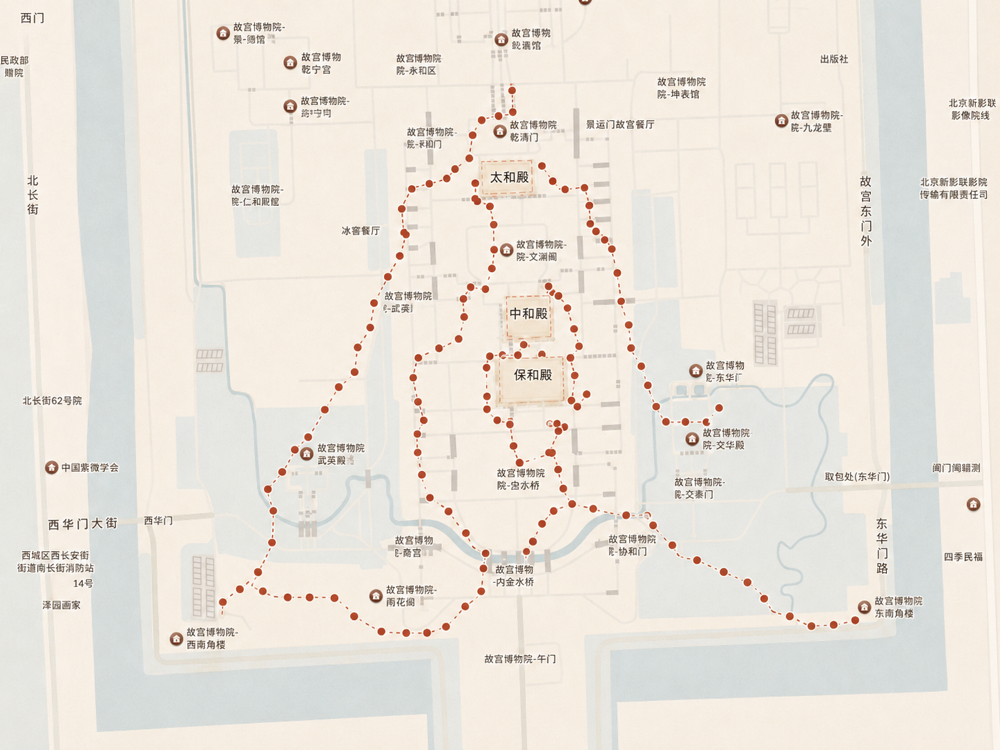
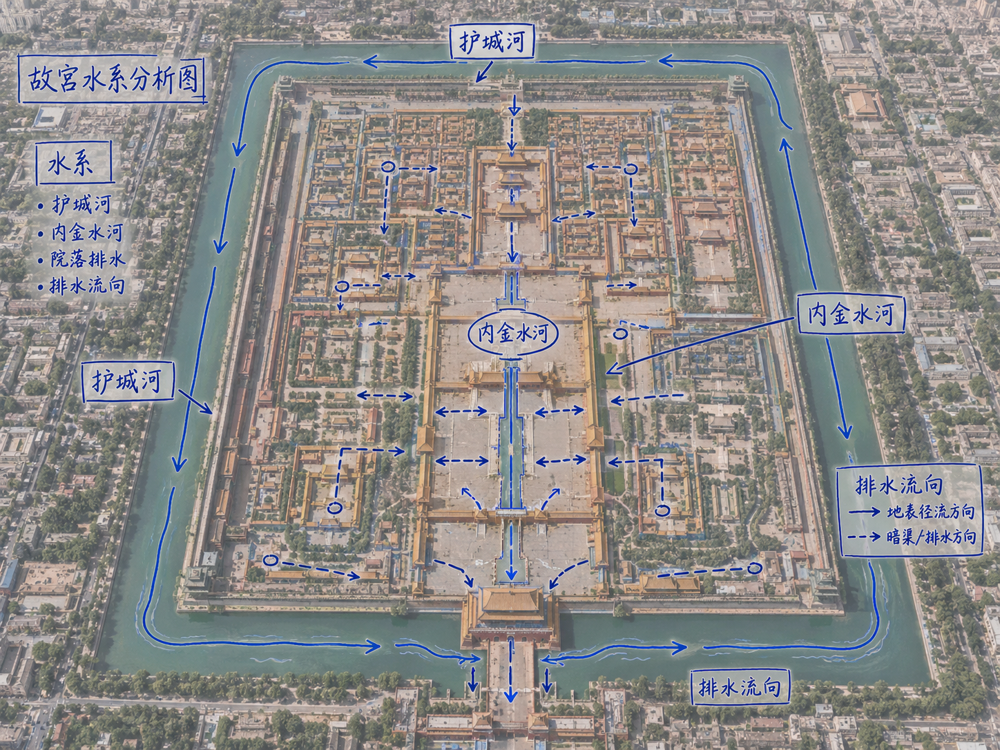
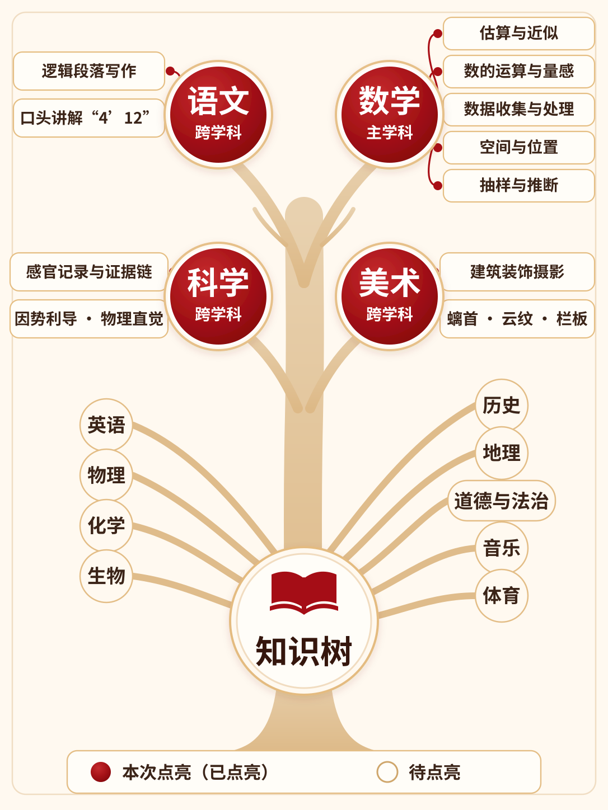

<!DOCTYPE html>
<html lang="zh-CN">
<head>
<meta charset="UTF-8">
<title>研学成长报告 · 数龙官 · 林同学</title>
<style>
/* ========== 设计令牌 ========== */
:root{
  --ink:#231a16;
  --muted:#66584f;
  --light:#8a7a6f;
  --paper:#fffdf8;
  --page:#eee7dc;
  --wash:#f7f1e7;
  --line:#ded3c2;
  --line-dark:#c9b9a3;
  --red:#8c211d;
  --red-dark:#611411;
  --blue:#176987;
  --green:#286b54;
  --gold:#b88738;

  --radius:8px;
  --radius-frame:24px;
  --shadow-frame:0 24px 60px rgba(35,26,22,.14);

  --frame-w:1552px;
  --frame-h:2016px;

  --fs-title:96px;
  --fs-body:64px;
  --fs-hint:36px;
  --fs-kpi:96px;
  --fs-badge:36px;
  --fs-kicker:64px;
  --fs-icon:64px;
  --fs-card-title:64px;
  --fs-stamp:64px;
  --fs-radar-dim:64px;
  --fs-radar-score:64px;

  --font-display:"Songti SC","Noto Serif SC",serif;
  --font-body:"PingFang SC","Microsoft YaHei","Noto Sans CJK SC",sans-serif;
}

/* ========== 全局重置 ========== */
*,*::before,*::after{margin:0;padding:0;box-sizing:border-box;}
html{font-size:20px;}
body{
  background:var(--page);
  color:var(--ink);
  font-family:var(--font-body);
  font-size:var(--fs-body);
  line-height:1.45;
  -webkit-font-smoothing:antialiased;
}

/* ========== 舞台 ========== */
.stage{
  display:flex;
  justify-content:space-between;
  gap:0;
  padding:72px 48px;
  width:9984px;
  min-height:2160px;
  align-items:center;
}

/* ========== 帧 ========== */
.frame{
  width:var(--frame-w);
  height:var(--frame-h);
  flex-shrink:0;
  background:var(--paper);
  border-radius:var(--radius-frame);
  border:1px solid var(--line-dark);
  box-shadow:var(--shadow-frame);
  overflow:hidden;
  display:flex;
  flex-direction:column;
  padding:56px 64px 48px;
}

/* ========== 页眉 ========== */
.frame-header{
  display:flex;
  justify-content:space-between;
  align-items:center;
  padding-bottom:20px;
  border-bottom:3px double var(--line-dark);
  margin-bottom:24px;
  flex-shrink:0;
}
.frame-header .kicker{
  font-size:var(--fs-kicker);
  font-weight:900;
  color:var(--red);
  letter-spacing:.2em;
}

/* ========== 标题 ========== */
.frame-title{
  font-family:var(--font-display);
  font-size:var(--fs-title);
  font-weight:900;
  line-height:1.15;
  color:var(--ink);
  margin-bottom:28px;
  flex-shrink:0;
}

/* ========== 主角区 ========== */
.hero{
  flex:1 1 auto;
  min-height:0;
  display:flex;
  flex-direction:column;
}

/* ========== Badge ========== */
.badge{
  display:inline-flex;
  align-items:center;
  height:64px;
  padding:0 18px;
  border:1px solid var(--line-dark);
  border-radius:var(--radius);
  font-size:var(--fs-badge);
  line-height:1;
  font-weight:700;
  color:var(--ink);
  background:var(--paper);
  white-space:nowrap;
}
.badge.red{border-color:var(--red);color:var(--red);}
.badge.green{border-color:var(--green);color:var(--green);}

/* ========== 印章 ========== */
.stamp{
  width:80px;
  height:80px;
  border:1.5px solid var(--red);
  border-radius:var(--radius);
  display:inline-flex;
  align-items:center;
  justify-content:center;
  font-family:var(--font-display);
  font-size:var(--fs-stamp);
  line-height:1;
  font-weight:900;
  color:var(--red);
  background:var(--paper);
  flex-shrink:0;
}

/* ========== 进度条 ========== */
.bar{
  height:18px;
  background:#e5d9c8;
  border-radius:999px;
  overflow:hidden;
}
.bar i{
  display:block;
  height:100%;
  background:var(--red);
  border-radius:999px;
}

/* ========== 流程步骤 ========== */
.flow-track{
  display:flex;
  align-items:stretch;
  gap:0;
  background:var(--wash);
  border-radius:16px;
  padding:24px 12px;
  position:relative;
}
.flow-step{
  flex:1;
  display:flex;
  flex-direction:column;
  align-items:center;
  gap:10px;
  position:relative;
}
.flow-num{
  width:76px;
  height:76px;
  border-radius:50%;
  background:var(--red);
  color:#fff;
  font-size:var(--fs-body);
  line-height:1;
  font-weight:900;
  display:flex;
  align-items:center;
  justify-content:center;
}
.flow-card{
  background:var(--paper);
  border:1px solid var(--line);
  border-radius:12px;
  padding:14px 6px;
  text-align:center;
  width:100%;
}
.flow-loc{
  font-size:var(--fs-hint);
  color:var(--light);
  display:flex;
  align-items:center;
  justify-content:center;
  gap:6px;
}
.flow-name{
  font-size:var(--fs-body);
  line-height:1.15;
  font-weight:900;
  color:var(--ink);
  margin-top:10px;
}
.flow-arrow{
  position:absolute;
  right:-24px;
  top:34px;
  color:var(--red);
  font-size:var(--fs-body);
  z-index:1;
}

/* ========== 数据大卡 ========== */
.stat-grid{
  display:grid;
  grid-template-columns:1fr 1fr;
  gap:20px;
  align-items:stretch;
}
.stat-card{
  background:var(--page);
  border-radius:12px;
  min-height:210px;
  padding:22px 28px;
  display:grid;
  grid-template-columns:80px 1fr;
  grid-template-areas:"icon label" "icon value";
  column-gap:20px;
  align-items:center;
  text-align:left;
}
.stat-card .icon{grid-area:icon;font-size:var(--fs-icon);line-height:1;}
.stat-card .label{
  grid-area:label;
  color:var(--muted);
  font-size:var(--fs-body);
  line-height:1.15;
  font-weight:800;
}
.stat-card .val{
  grid-area:value;
  font-size:var(--fs-kpi);
  font-weight:900;
  color:var(--ink);
  line-height:1.15;
}
.stat-card .val .u{
  font-size:var(--fs-body);
  font-weight:700;
}

/* ========== 团队迷你卡 ========== */
.team-row{
  display:flex;
  gap:20px;
}
.team-mini{
  flex:1;
  background:var(--wash);
  border:1px solid var(--line);
  border-radius:var(--radius);
  padding:24px;
  text-align:center;
}
.team-mini .tk{
  font-size:var(--fs-body);
  line-height:1.2;
  font-weight:800;
  color:var(--muted);
  margin-bottom:8px;
}
.team-mini .tv{
  font-family:var(--font-display);
  font-size:var(--fs-kpi);
  font-weight:900;
  line-height:1;
}

/* ========== 小组任务完成状态 ========== */
.role-grid{
  display:grid;
  grid-template-columns:repeat(6,1fr);
  gap:14px;
  margin-bottom:32px;
}
.role-card{
  min-width:0;
  min-height:188px;
  background:var(--wash);
  border:1px solid var(--line-dark);
  border-top:6px solid var(--red);
  border-radius:var(--radius);
  padding:18px 6px;
  display:flex;
  flex-direction:column;
  align-items:center;
  justify-content:center;
  text-align:center;
}
.role-check{
  width:58px;
  height:58px;
  border-radius:50%;
  background:var(--red);
  color:#fff;
  display:flex;
  align-items:center;
  justify-content:center;
  flex-shrink:0;
}
.role-check svg{width:34px;height:34px;display:block;}
.role-name{
  font-size:var(--fs-body);
  line-height:1.1;
  font-weight:900;
  color:var(--ink);
  margin-top:12px;
  white-space:nowrap;
}
/* ========== 报告图片 ========== */
.report-figure{
  flex:1;
  min-height:0;
  display:flex;
  flex-direction:column;
}
.report-figure figcaption{
  display:flex;
  align-items:center;
  gap:10px;
  font-size:var(--fs-body);
  line-height:1.3;
  font-weight:900;
  color:var(--ink);
  margin-bottom:16px;
  flex-shrink:0;
}
.report-media{
  flex:1;
  min-height:0;
  background:#fffdf3;
  border:1px solid var(--line);
  border-radius:var(--radius);
  overflow:hidden;
  display:flex;
  align-items:center;
  justify-content:center;
}
.report-media img{
  width:100%;
  height:100%;
  object-fit:contain;
  display:block;
}
.tree-figure .report-media{padding:20px;}

/* ========== 五维卡 ========== */
.suzhi-layout{
  flex:1;
  min-height:0;
  display:grid;
  grid-template-rows:auto minmax(0,1fr) auto;
  gap:16px;
}
.suzhi-card{
  background:var(--paper);
  border:1px solid var(--line);
  border-left:6px solid var(--red);
  border-radius:var(--radius);
  padding:24px 28px;
}
.suzhi-card .sc-head{
  display:flex;
  align-items:center;
  gap:14px;
  margin-bottom:14px;
}
.suzhi-card .sc-title{
  font-size:var(--fs-card-title);
  line-height:1.1;
  font-weight:900;
}
.suzhi-card .badge{
  height:64px;
  padding:0 16px;
  font-size:var(--fs-badge);
}
.suzhi-card .sc-body{
  font-size:var(--fs-body);
  line-height:1.3;
  color:var(--ink);
  margin-top:16px;
}
.suzhi-grid-top{
  display:grid;
  grid-template-columns:repeat(3,1fr);
  gap:20px;
}
.suzhi-grid-top .suzhi-card{min-height:450px;}
.sc-tags{
  display:flex;
  gap:10px;
  flex-wrap:wrap;
}
.sc-metrics{
  display:grid;
  grid-template-columns:1fr;
  gap:12px;
  margin-top:14px;
}
.sc-metric-head{
  display:flex;
  align-items:baseline;
  justify-content:space-between;
  gap:8px;
  margin-bottom:10px;
}
.sc-metric-label{font-size:var(--fs-hint);color:var(--muted);}
.sc-metric-value{
  font-size:var(--fs-body);
  line-height:1;
  font-weight:900;
  color:var(--red);
}
.health-stat{
  display:flex;
  align-items:baseline;
  gap:12px;
  flex-wrap:wrap;
  margin-top:20px;
}
.health-stat b{
  font-family:var(--font-display);
  font-size:72px;
  line-height:1;
  color:var(--red);
}
.health-stat span{
  font-size:var(--fs-body);
  color:var(--muted);
  font-weight:700;
}
.suzhi-art-card{
  background:var(--paper);
  border:1px solid var(--line);
  border-left:6px solid var(--red);
  border-radius:var(--radius);
  padding:22px 28px 20px;
  display:flex;
  flex-direction:column;
  flex:1;
  min-height:0;
}
.suzhi-art-head{
  display:flex;
  align-items:center;
  justify-content:space-between;
  gap:20px;
  margin-bottom:18px;
  flex-shrink:0;
}
.suzhi-art-head .sc-head{margin:0;}
.suzhi-art-kicker{
  font-size:var(--fs-hint);
  line-height:1.2;
  color:var(--red);
  font-weight:800;
  letter-spacing:.08em;
}
.suzhi-art-photo{
  border-radius:var(--radius);
  overflow:hidden;
  flex:1;
  min-height:0;
  background:var(--wash);
}
.suzhi-art-photo img{
  width:100%;
  height:100%;
  object-fit:cover;
  object-position:center 54%;
  display:block;
}
.suzhi-art-caption{
  display:flex;
  align-items:baseline;
  justify-content:space-between;
  gap:24px;
  padding-top:18px;
  flex-shrink:0;
}
.suzhi-art-caption strong{
  font-size:var(--fs-body);
  line-height:1.2;
  color:var(--ink);
}
.suzhi-art-caption span{
  font-size:var(--fs-hint);
  line-height:1.4;
  color:var(--muted);
}
.suzhi-labor-card{
  min-height:270px;
  display:grid;
  grid-template-columns:400px 1fr;
  align-items:center;
  gap:32px;
  padding:24px 32px;
}
.suzhi-labor-card .sc-head{
  margin:0;
  padding-right:32px;
  border-right:1px solid var(--line);
}
.suzhi-labor-content{min-width:0;}
.suzhi-labor-content .sc-body{margin-top:14px;}

/* ========== 雷达图 ========== */
.radar-wrap{
  flex:1;
  display:flex;
  align-items:center;
  justify-content:center;
  min-height:0;
}
.radar-hint{
  font-size:var(--fs-hint);
  color:var(--light);
  text-align:center;
  margin-top:24px;
}

/* ========== 雷达详情卡 ========== */
.radar-detail{
  background:var(--paper);
  border:1px solid var(--line);
  border-radius:var(--radius);
  padding:40px 48px;
  flex:1;
  min-height:0;
  transition:all .25s;
}
.radar-detail.active{border-left:6px solid var(--red);}
.radar-detail .rd-head{
  display:flex;
  align-items:center;
  gap:24px;
  margin-bottom:28px;
}
.radar-detail .rd-dim{
  font-size:var(--fs-radar-dim);
  line-height:1.2;
  font-weight:900;
  color:var(--ink);
}
.radar-detail .rd-score{
  display:inline-flex;
  align-items:center;
  background:linear-gradient(135deg,var(--red),#b5342f);
  color:#fff;
  font-size:var(--fs-radar-score);
  line-height:1.2;
  font-weight:800;
  padding:8px 24px;
  border-radius:28px;
}
.radar-detail .rd-rating{
  font-size:var(--fs-hint);
  color:var(--red);
  font-weight:700;
  border:1.5px solid var(--red);
  padding:8px 18px;
  border-radius:16px;
}
.radar-detail .rd-def{
  font-size:var(--fs-body);
  color:var(--muted);
  line-height:1.35;
  margin-bottom:28px;
}
.radar-detail .rd-ref{margin-bottom:28px;}
.radar-detail .rd-ref-title{
  font-size:var(--fs-hint);
  color:var(--light);
  font-weight:700;
  margin-bottom:12px;
}
.radar-detail .rd-ref ul{
  list-style:none;
  padding:0;
  margin:0;
  display:flex;
  flex-wrap:wrap;
  gap:12px;
}
.radar-detail .rd-ref li{
  font-size:var(--fs-hint);
  color:var(--muted);
  background:var(--wash);
  border:1px solid var(--line);
  padding:10px 18px;
  border-radius:16px;
}
.radar-detail .rd-avg{
  font-size:var(--fs-body);
  line-height:1.3;
  color:var(--light);
  margin-bottom:28px;
}
.radar-detail .rd-avg b{color:var(--ink);font-weight:800;}
.radar-detail .rd-why-title{
  font-size:var(--fs-body);
  color:var(--red);
  font-weight:800;
  margin-bottom:10px;
}
.radar-detail .rd-why{
  font-size:var(--fs-body);
  line-height:1.4;
  color:var(--ink);
}

/* ========== 维度切换按钮 ========== */
.dim-tabs{
  display:flex;
  gap:12px;
  margin-top:24px;
  flex-shrink:0;
}
.dim-tab{
  flex:1;
  height:110px;
  display:flex;
  align-items:center;
  justify-content:center;
  font-size:var(--fs-body);
  font-weight:900;
  color:var(--muted);
  background:var(--wash);
  border:2px solid var(--line);
  border-radius:var(--radius);
  cursor:pointer;
  transition:all .2s;
}
.dim-tab.active{
  color:var(--red);
  border-color:var(--red);
  background:var(--paper);
}
.dim-tab:hover{color:var(--ink);}
</style>
</head>
<body>

<div class="stage">
  <article class="frame" id="p1"></article>
  <article class="frame" id="p2"></article>
  <article class="frame" id="p3"></article>
  <article class="frame" id="p4"></article>
  <article class="frame" id="p5"></article>
  <article class="frame" id="p6"></article>
</div>

<script>
const D = {
  student:{name:"林同学",grade:"初二",school:"北京市第 X 中学",role:"数龙官",date:"2026-07-08",team:"第 3 分队 · 青龙组"},
  achieve:{
    duration:"5.5小时",
    steps:14523,
    photos:18,
    reflectWords:412
  },
  team:{size:5, tokens:6, finished:"6/6"},
  radar:{
    参与度:92,投入度:88,合作度:85,敏捷度:78,表达力:90
  },
  radarExplain:{
    参与度:{
      def:"围绕任务地点的实际停留与主动操作程度",
      ref:["移动轨迹密度","拍照次数","备忘录/画板/语音工具使用"],
      avg:81, rating:"优秀",
      why:"移动轨迹覆盖太和殿月台东南西北四面；三层月台各拍 2 张以上有效照片；备忘录、画板、语音三种工具均有使用。"
    },
    投入度:{
      def:"任务作答的认真程度与深度",
      ref:["填报内容丰富度","反思文本长度","画板草稿完成度","语音推理时长"],
      avg:76, rating:"优秀",
      why:"「算其数」写了 132 字分层估算方案；反思卷宗共 412 字并附草稿；语音累计 6.4 分钟，全班平均的 1.6 倍。"
    },
    合作度:{
      def:"与同组同伴形成有效协作的程度",
      ref:["轨迹重合度","时间银行借入/借出","共同产出完成度"],
      avg:79, rating:"良好",
      why:"中层计数环节与同伴路径重合 42%；主动向另一组「送」了 3 分钟；小组 6 张令牌全部集齐、合作完成水系图与演讲。"
    },
    敏捷度:{
      def:"在合理范围内又快又好，速度与正确率的乘积",
      ref:["关卡平均用时","估算误差率","任务完成节奏"],
      avg:72, rating:"良好",
      why:"三个关卡平均用时 17.5 分钟，比推荐 20 分钟节约 12.5%；估算误差仅 1.23%（目标 ±3% 内）。"
    },
    表达力:{
      def:"能否把「我怎么想的」讲清楚",
      ref:["反思文本结构","语音表达","课后演讲"],
      avg:74, rating:"优秀",
      why:"独立完成 4 分 12 秒的水系演讲，讲清「螭首→坡度→暗沟→金水河→护城河」水路；反思文本含 3 处「因为…所以…」结构。"
    }
  }
};

const PIN = '<svg width="36" height="36" viewBox="0 0 24 24" fill="var(--red)" stroke="none" aria-hidden="true"><path d="M12 2C8.13 2 5 5.13 5 9c0 5.25 7 13 7 13s7-7.75 7-13c0-3.87-3.13-7-7-7zm0 9.5c-1.38 0-2.5-1.12-2.5-2.5s1.12-2.5 2.5-2.5 2.5 1.12 2.5 2.5-1.12 2.5-2.5 2.5z"/></svg>';
const CHECK = '<svg viewBox="0 0 24 24" fill="none" stroke="currentColor" stroke-width="3" stroke-linecap="round" stroke-linejoin="round" aria-hidden="true"><path d="M5 12.5 9.5 17 19 7.5"/></svg>';

function frameShell(el, kicker, title, bodyHTML){
  el.innerHTML = `
    <div class="frame-header"><span class="kicker">${kicker}</span></div>
    <h1 class="frame-title">${title}</h1>
    <div class="hero">${bodyHTML}</div>
  `;
}

// ============= P1 · 你的这一天（上） =============
frameShell(document.getElementById('p1'), '成就回顾', '你的这一天', `
  <div class="flow-track" style="margin-bottom:24px;">
    ${[
      {n:1,loc:'沉浸空间',name:'任务领取'},
      {n:2,loc:'故宫',name:'观其形'},
      {n:3,loc:'故宫',name:'算其数'},
      {n:4,loc:'故宫',name:'验其差'},
      {n:5,loc:'沉浸空间',name:'真相推演'}
    ].map((s,i,a)=>`
      <div class="flow-step">
        <div class="flow-num">${s.n}</div>
        <div class="flow-card">
          <div class="flow-loc">${PIN} ${s.loc}</div>
          <div class="flow-name">${s.name}</div>
        </div>
        ${i<a.length-1?'<div class="flow-arrow">→</div>':''}
      </div>
    `).join('')}
  </div>
  <div class="stat-grid" style="margin-bottom:24px;">
    ${[
      {icon:'🕐',label:'探索时长',val:D.achieve.duration,unit:''},
      {icon:'🚶',label:'步行步数',val:D.achieve.steps.toLocaleString(),unit:''},
      {icon:'📷',label:'拍摄照片',val:D.achieve.photos,unit:' 张'},
      {icon:'✏️',label:'反思文字',val:D.achieve.reflectWords,unit:' 字'}
    ].map(k=>`
      <div class="stat-card">
        <div class="icon">${k.icon}</div>
        <div class="label">${k.label}</div>
        <div class="val">${k.val}<span class="u">${k.unit}</span></div>
      </div>
    `).join('')}
  </div>
  <figure class="report-figure">
    <figcaption>${PIN} 今日行动路线</figcaption>
    <div class="report-media">
      
    </div>
  </figure>
`);

// ============= P2 · 青龙队的这一天 =============
frameShell(document.getElementById('p2'), '成就回顾', '青龙队的这一天', `
  <div class="role-grid">
    ${['数龙官','测坡官','寻沟官','引河官','护城官','真相官'].map(role=>`
      <div class="role-card">
        <div class="role-check">${CHECK}</div>
        <div class="role-name">${role}</div>
      </div>
    `).join('')}
  </div>
  <div class="team-row" style="margin-bottom:32px;">
    <div class="team-mini">
      <div class="tk">队伍规模</div>
      <div class="tv">${D.team.size}<span style="font-size:var(--fs-body);font-family:var(--font-body);"> 人</span></div>
    </div>
    <div class="team-mini">
      <div class="tk">身份令牌</div>
      <div class="tv">${D.team.tokens}<span style="font-size:var(--fs-body);font-family:var(--font-body);">/6</span></div>
    </div>
    <div class="team-mini">
      <div class="tk">全队关卡</div>
      <div class="tv">${D.team.finished}</div>
    </div>
  </div>
  <figure class="report-figure">
    <figcaption>你们今日的推演结果</figcaption>
    <div class="report-media">
      
    </div>
  </figure>
`);

// ============= P3 · 点亮的学科版图 =============
frameShell(document.getElementById('p3'), '能力发展', '点亮的学科版图', `
  <figure class="report-figure tree-figure">
    <div class="report-media">
      
    </div>
  </figure>
`);

// ============= P4 · 综合素质评价过程证据 =============
frameShell(document.getElementById('p4'), '能力发展', '综合素质评价过程证据', `
  <div class="suzhi-layout">
    <div class="suzhi-grid-top">
      <div class="suzhi-card">
        <div class="sc-head"><div class="stamp">德</div><div class="sc-title">思想品德</div></div>
        <div class="sc-tags">
          <span class="badge">文化认同</span><span class="badge">辩证思考</span>
        </div>
        <div class="sc-body">敬畏而不神化</div>
      </div>
      <div class="suzhi-card">
        <div class="sc-head"><div class="stamp">学</div><div class="sc-title">学业成就</div></div>
        <div class="sc-tags">
          <span class="badge red">误差 1.23%</span><span class="badge">5 个数学知识点</span>
        </div>
        <div class="sc-metrics">
          <div>
            <div class="sc-metric-head"><span class="sc-metric-label">估算精度</span><b class="sc-metric-value">96%</b></div>
            <div class="bar"><i style="width:96%"></i></div>
          </div>
          <div>
            <div class="sc-metric-head"><span class="sc-metric-label">反思深度</span><b class="sc-metric-value">92%</b></div>
            <div class="bar"><i style="width:92%"></i></div>
          </div>
        </div>
      </div>
      <div class="suzhi-card">
        <div class="sc-head"><div class="stamp">健</div><div class="sc-title">身心健康</div></div>
        <div class="sc-tags">
          <span class="badge">户外持久力</span><span class="badge">10.2 km</span>
        </div>
        <div class="health-stat"><b>${D.achieve.steps.toLocaleString()}</b><span>步</span></div>
      </div>
    </div>
    <div class="suzhi-card suzhi-art-card">
      <div class="suzhi-art-head">
        <div class="sc-head"><div class="stamp">美</div><div class="sc-title">艺术素养</div></div>
        <div class="suzhi-art-kicker">建筑审美 · 影像观察</div>
      </div>
      <div class="suzhi-art-photo">
        
      </div>
      <div class="suzhi-art-caption">
        <strong>你发现的美</strong>
        <span>千龙吐水 · 建筑装饰摄影</span>
      </div>
    </div>
    <div class="suzhi-card suzhi-labor-card">
      <div class="sc-head"><div class="stamp">劳</div><div class="sc-title">社会实践</div></div>
      <div class="suzhi-labor-content">
        <div class="sc-tags">
          <span class="badge">协作意识</span><span class="badge">责任担当</span><span class="badge">面向公众表达</span>
        </div>
        <div class="sc-body">主动送时，与小组完成水系图和班级演讲。</div>
      </div>
    </div>
  </div>
`);

// ============= P5 · 活动参与过程评价（雷达图） =============
function radarSVG(){
  const keys = Object.keys(D.radar);
  const vals = keys.map(k=>D.radar[k]);
  const cx=450, cy=450, R=250;
  const n=keys.length;
  const angle = (i)=> -Math.PI/2 + (2*Math.PI*i/n);

  const ringLevels = [100,80,60,40,20];
  const rings = ringLevels.map(lv=>{
    const r = R*lv/100;
    const pts = Array.from({length:n}).map((_,i)=>{
      const a=angle(i);
      return `${cx+r*Math.cos(a)},${cy+r*Math.sin(a)}`;
    }).join(' ');
    return `<polygon points="${pts}" fill="none" stroke="var(--line)" stroke-width="${lv===100?1.5:0.8}" stroke-dasharray="${lv===100?'none':'4 3'}"/>`;
  }).join('');

  const scaleLabels = [20,40,60,80].map(lv=>{
    const r = R*lv/100;
    return `<text x="${cx+12}" y="${cy-r+12}" font-size="36" fill="var(--light)" font-family="var(--font-body)" opacity="0.8">${lv}</text>`;
  }).join('');

  const axes = keys.map((_,i)=>{
    const a=angle(i);
    return `<line x1="${cx}" y1="${cy}" x2="${cx+R*Math.cos(a)}" y2="${cy+R*Math.sin(a)}" stroke="var(--line)" stroke-width="0.8"/>`;
  }).join('');

  const dataPts = vals.map((v,i)=>{
    const a=angle(i);
    const r=R*v/100;
    return `${cx+r*Math.cos(a)},${cy+r*Math.sin(a)}`;
  });
  const dataPoly = `<polygon points="${dataPts.join(' ')}" fill="rgba(140,33,29,.10)" stroke="var(--red)" stroke-width="3"/>`;
  const dots = dataPts.map(p=>`<circle cx="${p.split(',')[0]}" cy="${p.split(',')[1]}" r="8" fill="var(--red)"/>`).join('');

  const labels = keys.map((k,i)=>{
    const a=angle(i);
    const lR=R+100;
    const x=cx+lR*Math.cos(a);
    const y=cy+lR*Math.sin(a);
    const v=vals[i];
    const labelY=y-28;
    const badgeY=y;
    return `<g class="radar-vertex" data-k="${k}">
      <text x="${x}" y="${labelY}" text-anchor="middle" font-size="64" fill="var(--muted)" font-family="var(--font-body)" font-weight="700">${k}</text>
      <rect x="${x-70}" y="${badgeY}" rx="39" ry="39" width="140" height="78" fill="var(--red)" opacity="0.92"/>
      <text x="${x}" y="${badgeY+59}" text-anchor="middle" font-size="64" fill="#fff" font-weight="900" font-family="var(--font-body)">${v}</text>
    </g>`;
  }).join('');

  return `<svg viewBox="0 0 900 900" style="width:100%;max-height:1100px;display:block;margin:0 auto;">
    ${rings}${scaleLabels}${axes}${dataPoly}${dots}${labels}
  </svg>`;
}

frameShell(document.getElementById('p5'), '活动参与过程评价', '活动参与过程评价', `
  <div class="radar-wrap">${radarSVG()}</div>
  <div class="radar-hint">点击维度查看详情 → 见下一屏</div>
`);

// ============= P6 · 活动参与过程评价 · 详情 =============
frameShell(document.getElementById('p6'), '活动参与过程评价', '活动参与过程评价 · 详情', `
  <div class="radar-detail active" id="radarDetail"></div>
  <div class="dim-tabs" id="dimTabs">
    ${Object.keys(D.radar).map((k,i)=>`<div class="dim-tab${i===0?' active':''}" data-k="${k}">${k}</div>`).join('')}
  </div>
`);

// ============= 交互：P6 维度切换 =============
(function(){
  const $box = document.getElementById('radarDetail');
  const tabs = document.querySelectorAll('#dimTabs .dim-tab');
  let activeK = null;

  function showDim(k){
    if(activeK===k) return;
    activeK = k;
    const info = D.radarExplain[k];
    const v = D.radar[k];
    const diff = v - info.avg;
    const diffStr = diff>0?`高于班均 ${diff} 分`:(diff<0?`低于班均 ${Math.abs(diff)} 分`:'与班均持平');
    tabs.forEach(t=>t.classList.toggle('active', t.dataset.k===k));
    $box.innerHTML = `
      <div class="rd-head">
        <span class="rd-dim">${k}</span>
        <span class="rd-score">${v}</span>
        <span class="rd-rating">${info.rating}</span>
      </div>
      <div class="rd-def">${info.def}</div>
      <div class="rd-ref">
        <div class="rd-ref-title">参考数据</div>
        <ul>${info.ref.map(r=>`<li>${r}</li>`).join('')}</ul>
      </div>
      <div class="rd-avg">班级均分 <b>${info.avg}</b>　${diffStr}</div>
      <div class="rd-why-title">AI 总结</div>
      <div class="rd-why">${info.why}</div>
    `;
  }

  tabs.forEach(t=>t.addEventListener('click',()=>showDim(t.dataset.k)));
  showDim(Object.keys(D.radar)[0]);
})();
</script>

</body>
</html>
